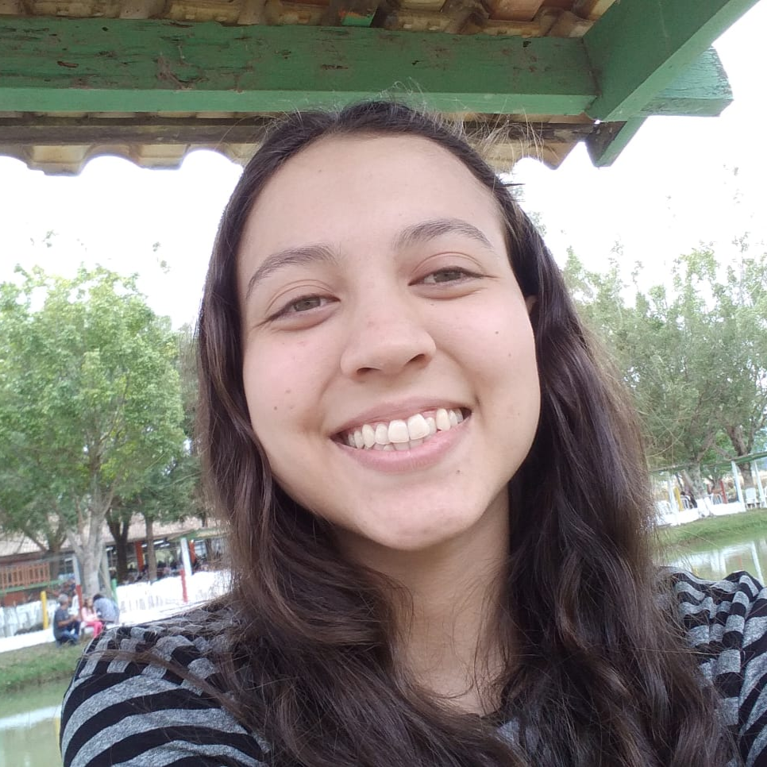
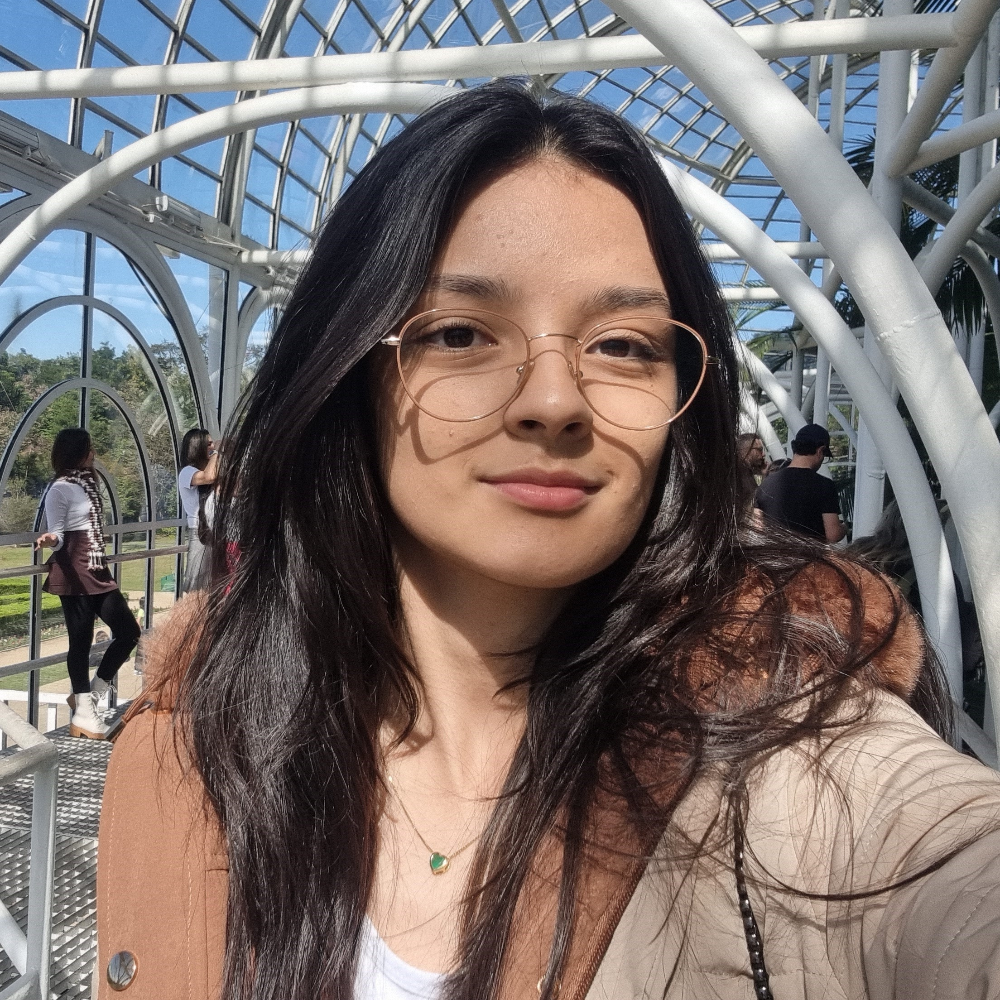
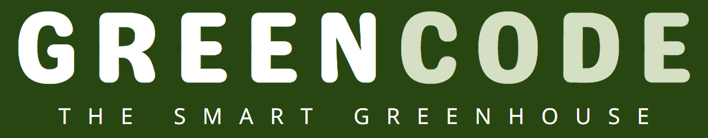

II Segundo Encontro de Jovens Cientistas | Jornal Vanguarda
CPTEC-Inpe faz encontro de jovens cientistas em Cachoeira Paulista.



CPTEC-Inpe faz encontro de jovens cientistas em Cachoeira Paulista.

II Encontro de Jovens Cientistas realizado no Instituto Nacional de Pesquisas Espaciais (INPE) em Cachoeira Paulista - SP.

Esse projeto tem como objetivo facilitar e incentivar a agricultura em casa, tendo uma estrutura compacta e de fácil uso.
